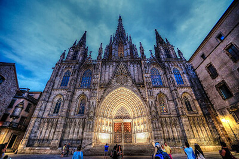
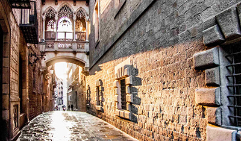
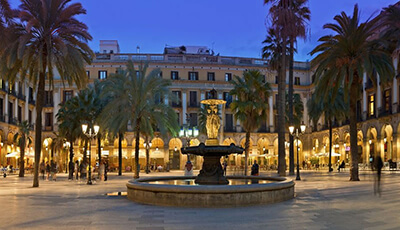
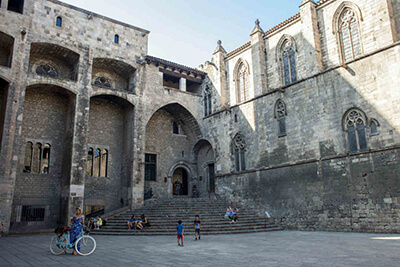
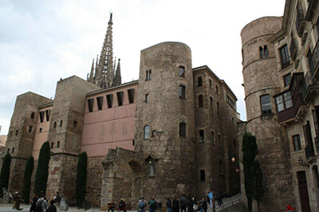
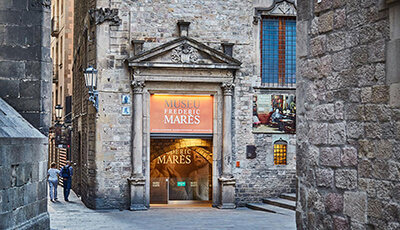

Que Ver
El Barrio Gótico de Barcelona cuenta con numerosos atractivos turísticos para todos los gustos, entre los que podríamos destacar:
-
Plaza Sant Jaume
Centro político de Barcelona, se trata del lugar en el que se ubican el Ayuntamiento y el Palacio de la Generalidad de Cataluña.
Volver al inicio
-
Catedral de Santa Eulalia
También conocida como la SEU, la Catedral de Barcelona es un ejemplo de la arquitectura gótica catalana que data del siglo XIV.
Volver al inicio -
Carrer del Bisbe
Agradable calle peatonal que une la Plaza Sant Jaume con la Catedral.
Volver al inicio -
Plaza Real
Situada junto a Las Ramblas, esta sorprendente plaza de estilo neoclásico es una de las más agradables y animadas de la zona.
Volver al inicio -
Plaza del Rey
Sede del Palacio Real desde comienzos de la Edad Media, acoge un conjunto de edificios medievales que albergan parte del Museo de la Historia de la Ciudad.
Volver al inicio -
Plaza Nova
Ubicada en las inmediaciones de la Catedral, esta acogedora plaza aún conserva parte de sus dos antiguas torres romanas.
Volver al inicio -
Museo Frederic Marès
Situado en una parte del antiguo Palacio de los Condes de Barcelona compone un singular espacio en el que se exponen las obras del coleccionista Frederic Marès.
Volver al inicio